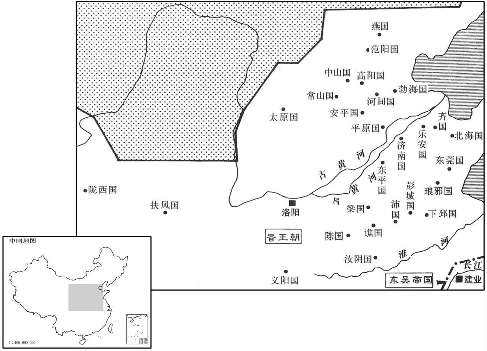

公元265年资治通鉴：本年记事、原文与白话对照
按原书编年位置阅读；追叙和史论不等于本年发生的事件。白话采用所据译本，缺译不以生成译文补齐。
卷79 · 本年记事
公元265年 · 晋世祖武皇帝泰始元年
泰始元年〔（乙酉、二六五）是年十二月，方受禅改元，此犹是魏咸熙二年。〕
本年事件索引（现代整理）

本年形势与背景参考图
春，三月，吴主使光禄大夫纪陟、五官中郎将洪璆〔璆，渠尤翻。〕与徐绍、孙彧偕来报聘。〔绝彧聘吴见上卷上年。〕绍行至濡须，有言绍誉中国之美者，〔誉，音余。〕吴主怒，追还，杀之。
春季，三月，吴主派遣光禄大夫纪陟、五官中郎将洪，与徐绍、孙一起去魏国回报聘问。徐绍走到濡须的时候，有人说徐绍曾称赞中原之国的美好，吴主动怒，追回徐绍，把他杀死。
夏，四月，吴改元甘露。〔时因蒋陵言甘露降改元。〕
夏季，四月，吴国改年号为甘露。
五月，魏帝加文王殊礼，〔谓旌旗、车马、乐舞、冕服，皆如帝者之仪。〕进王妃曰后；世子曰太子。
两版字句有差异，建议核对原文。
五月，魏元帝施与晋文王特殊的礼遇，晋升王妃为王后，世子改称为太子。
癸未，大赦。
癸未（三十日），大赦天下。
秋，七月，吴主逼杀景皇后，迁景帝四子于吴；寻又杀其长者二人。〔吴主贬景后，封四弟，事见上卷上年。长，知两翻。〕
秋季，七月，吴主逼杀吴帝皇后，把景帝的四个儿子迁到吴，不久，又把四人中两个年龄大的杀了。
八月，辛卯，文王卒，太子嗣为相国、晋王。
八月，辛卯（初九），晋文王司马昭去世，太子司马炎继位，做了相国、晋王。
九月，乙未，大赦。
九月，乙未（疑误），大赦天下。
戊子，以魏司徒何曾为晋丞相；癸亥，以票骑将军司马望为司徒。〔票，匹妙翻。骑，奇寄翻。〕
戊子（初七），任命魏司马何曾为晋丞相。癸亥（十二日），任命票骑将军司马望为司徒.
乙亥，葬文王于崇阳陵。〔考异曰：晋书文纪作「癸酉」，今从魏志陈留王纪。〕
乙亥（二十四日），在崇阳陵理葬晋文王。
冬，吴西陵督步阐〔西陵，即夷陵。吴主权黄武元年改夷陵曰西陵，宜都郡治焉。〕表请吴主徙都武昌；吴主从之，使御史大夫丁固、右将军诸葛靓守建业。〔靓，疾正翻。〕阐，骘之子也。〔吴主权时，骘为西陵督，之日翻。〕
冬季，吴国西陵督步阐上表，请求吴主把国都迁到武昌，吴主听从 了他的建议，委派御史大夫丁固、右将军诸葛靓镇守建业。步阐是步骘的儿子。
十二〔【张：「十二」作「十一」。】〕月，壬戌，魏帝禅位于晋；〔魏元帝时年二十，困敦上章，魏文帝始受汉禅，传五世，历四十六年而亡。〕甲子，出舍于金墉城。〔金墉城在洛阳城西北角。〕太傅司马子拜辞，执帝手，流涕歔欷不自胜，〔歔，音虚。欷，音希，又许既翻。胜，音升。〕曰：「臣死之日，固大魏之纯臣也。」丙寅，王即皇帝位，大赦，改元。〔至是方改元泰始。〕丁卯，奉魏帝为陈留王，即宫于邺。〔即，就也。〕优崇之礼，皆仿魏初故事。〔见六十九卷魏文帝黄初元年。〕魏氏诸王皆降为侯。追尊宣王为宣皇帝，景王为景皇帝，文王为文皇帝；尊王太后曰皇太后。封皇叔祖孚为安平王，叔父干为平原王、亮为扶风王、軎为东莞王、骏为汝阴王、肜为梁王，伦为琅邪王，弟攸为齐王、鉴为乐安王、机为燕王；又封群从司徒望等十七人皆为王。〔望，孚之子也。帝封诸王，以郡为国。邑二万户为大国，置上、中、下三军，兵五千人；万户为次国，置上军、下军，兵三千人；五千户为小国，置一军，兵五百人。王不之国，官于京师。軎，音胄。从，才用翻。莞，音官。肜，余中翻。燕于贤翻。〕以石苞为大司马，郑冲为太傅，王祥为太保，何曾为太尉，贾充为车骑将军，王沈为骠骑将军；〔骑，奇寄翻。沈，持林翻。骠，匹妙翻。〕其余文武增位进爵有差。乙亥，以安平王孚为太宰，都督中外诸军事。〔晋志曰：太宰、太傅、太保，周之三公官也。晋初以景帝讳故，又采周官官名，置太宰以代太师之任，秩增三司，与太傅、太保皆为上公。大司马，古官也，汉制以冠大将军、骠骑将军之上，以代太尉之职，故恒与太尉迭置，不并列。及魏有太尉，而大司马、大将军各自为官，位在三司上。晋因其制，以太宰、太傅、太保、司徒、司空为文官公，左右光禄大夫、光禄大夫开府者，位从公，冠进贤、三梁，黑介帻。大司马、大将军、太尉为武官公，骠骑、车骑、卫将军、伏波、抚军、都护、镇军、中军、四征、四镇、龙骧、典军、上军、辅国等大将军开府者，位从公，皆着武冠，平上黑帻。〕未几，〔几，居岂翻。〕又以车骑将军陈骞为大将军，与司徒义阳王望、司空荀顗，凡八公，同时并置。帝惩魏氏孙立之敝，故大封宗室，授以职任。又诏诸王皆得自选国中长吏；〔长，知两翻。〕卫将军齐王攸独不敢，皆令上请。〔上，时掌翻。〕
十一月，壬戌（十二日），魏元帝把皇位禅让给晋王。甲子（十四日），魏元帝搬到金墉城居住。太傅司马孚与魏元帝辞别，拉着魏元帝的手，流泪叹息不能自制，说：“我到死的那一天，仍然是大魏真正的臣子。”丙寅（十六日），晋王司马炎登上皇帝位，大赦天下，改年号为泰始。丁卯（十七日），尊奉魏元帝为陈留王，宫室安排在邺城，优厚高贵的礼制待遇，都仿效魏国初期的制度。魏宗室诸王都降为侯。追尊晋宣王司马懿为宣皇帝，晋景王司马师为景皇帝，晋文王司马昭为文皇帝；尊王太后为皇太后。封皇帝的叔祖司马孚为安平王；叔父司马斡为平原王，司马亮为扶风王，司马为东莞王，司马骏为汝阴王，司马肜为梁王，司马伦为琅邪王，封皇帝之弟司马攸为齐王、司马鉴为乐安王、司马机为燕王。又把司徒司马望等诸子侄共十七人都封为王。任命石苞为大司马，郑冲为太傅，王祥为太保，何曾为太尉，贾充为车骑将军，王沈为骠骑将军；其余的文武官员，提级进爵各有差别。乙亥（二十五日），任命安平王司马孚为太宰，统领朝廷内外的军事事务。过了不久，又任命车骑将军陈骞为大将军，与司徒义阳王司马望、司空荀等，总共是八公，同时并列设置。晋武帝以魏氏孤立无援的弊害作为警戒，因而大封宗室，赋与他们职权。晋武帝又诏告诸王可以自己选择封国中的官吏，只有卫将军齐王司马攸不敢自选，全部官吏都请求晋武帝指派。
诏除魏宗室禁锢，罢部曲将及长吏纳质任。〔魏防禁宗室甚峻，又锢不得仕进，今除之。又诸将征戌及长吏仕州郡者，皆留质任于京师，今亦罢之。将，即亮翻。质，音致。〕
晋武帝下诏，免除魏宗室的禁锢令，废除部曲将领及州郡长吏纳人质于京师的制度。
帝承魏氏刻薄奢侈之后，矫以仁俭。太常丞许奇，允之子也。〔晋太常、光禄动、卫尉、太仆、廷尉、大源胪、宗正、大司农、少府、将作大匠、太后三卿、大长秋，皆为列卿，各置丞、功曹、主簿、五官等员。〕帝将有事于太庙，庙议以奇父诛，〔奇公允诛，事见七十六卷高贵乡公正元元年。朝，直遥翻。〕不宜接近左右，〔近，其靳翻。〕请出为外官述允之宿望，称奇之才，擢为祠部郎。〔魏尚书曹有祠部郎，晋因之。〕有司言御牛青丝纼断，〔纼，直忍翻，索也，牛系也，礼迎牲，君执纼。周礼封人，祭祀，饰其牛牲，置其絼。注曰：絼，着牛鼻绳，所以牵牛者，今人谓之雉。疏曰：自汉以前，皆谓之絼。按礼记少仪：牛则执纼。纼则絼之别名，今亦谓之为纼。陆德明曰：絼，与纼同，又以忍翻；又周礼释音羊晋翻。〕诏以青麻代之。
晋武帝是继魏氏苛酷奢侈的政治之后登极的，他以仁厚节俭的作风纠正魏氏的弊端。太常丞许奇是许允的儿子。晋武帝将要在太庙行事，朝廷中议事的时候，大臣们认为，许奇的父亲因过被诛，许奇不宜在武帝身边供职，应当委派他担任朝廷外的官职。晋武帝于是追述许允的名望，称赞许奇的才能，提拔他担任祠部郎。有关部门称，宫中所用的青丝牵牛绳断了，晋武帝下诏，用青麻代替青丝。
初置谏官，以散骑常侍傅玄、皇甫陶为之。〔秦、汉以来有谏大夫，郑昌所谓「官以谏为名」者也。东汉朿谏议大夫。魏不复置。晋以散骑常侍拾遗补阙，即谏官职也。〕玄，干之子也。〔傅干，汉傅燮之子。〕玄以魏末士风颓敝，上疏曰：「臣闻先王之御天下，教化隆于上，清议行于下。近者魏武好法术而天下贵刑名，〔好，呼到翻。〕魏文慕通达而天下贱守节，其后纲维不摄，〔摄，整也。〕放诞盈朝，〔谓何晏、阮籍辈也。朝，直遥翻。〕遂使天下无复清议。陛下龙兴受禅，弘尧、舜之化，惟未举清远有礼之臣以敦风节，未退虚鄙之士以惩不恪，臣是以犹敢有言。」上嘉纳其言，使玄草诏进之，然亦不能革也。
当初设置谏官的时候，任命散骑常侍傅玄、皇甫陶担任。傅玄是傅斡的儿子。傅玄看到魏末士风衰败，于是上疏说：“我听说先王治理天下，教化昌盛上，公正的评论通行于下。近世以来，魏武帝喜好法术而天下重视刑名；魏文帝思慕通达而天下轻贱操守名分，从这以后纲纪不整，浮夸虚无的风气充满朝廷，于是使天下不再有公正的评论。陛下接受禅让登极，弘扬尧、舜之风，唯独没有选拔清明广远有礼法之臣，以促进风化与操守；没有斥退虚浮鄙陋之人，以惩戒不恭敬不谨慎的人，因此我才冒昧地说这番话。”晋武帝赞许并采纳了他的意见，让傅玄起草诏书以便实行，但是也未能改变当时的风气。
初，汉征西将军司马钧〔钧事见五十卷汉安帝元初二年。〕生豫章章太守量，量生颍川太守隽，隽生京兆尹防，防生宣帝。〔序司马之世，为下立庙张本。〕
当初，汉征西将军司马钧生下豫章太守司马量，司马量生下颍川太守司马，司马生下京兆尹司马防，司马防生下晋宣帝司马懿。